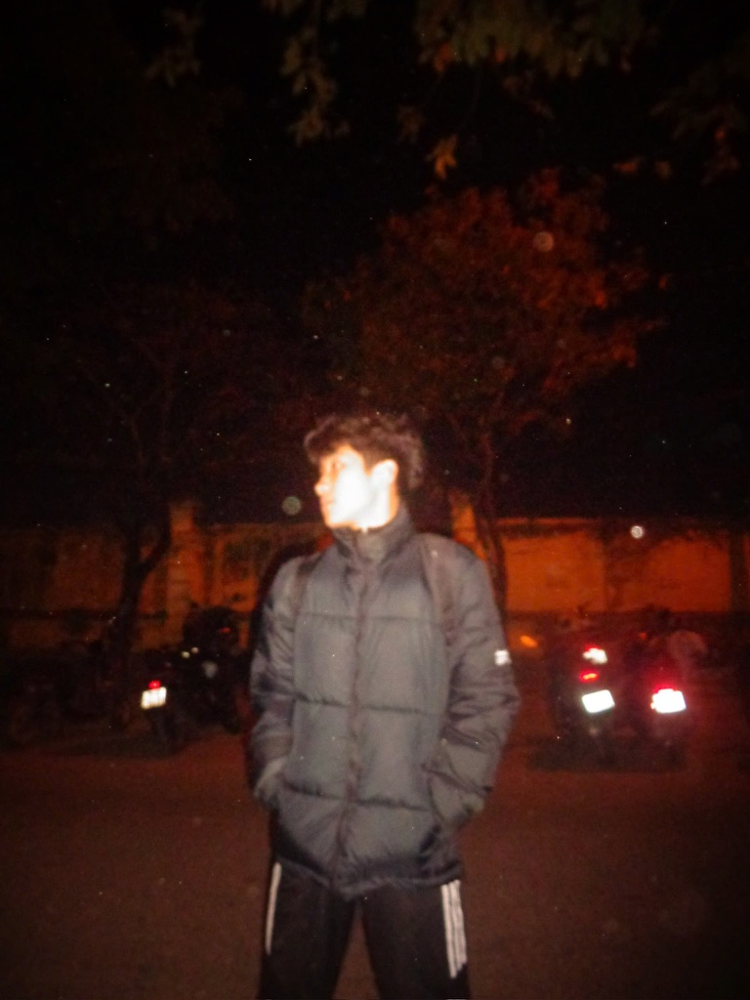

Ở Bài 1, em tập trung rèn luyện kỹ năng thao tác với tệp tin và thư mục. Mục tiêu chính là biết cách tạo, đổi tên, sao chép, di chuyển, xóa và khôi phục dữ liệu một cách linh hoạt trên cả macOS và Windows. Qua bài tập này, em nắm vững cách sắp xếp tài liệu học tập theo dạng cây thư mục rõ ràng và giảm thiểu tình trạng thất lạc dữ liệu.
Digital Portfolio · 2026
Xin chào,
tôi là Xuân Thịnh
Sinh viên thuộc Viện Trí tuệ nhân tạo - Trường Đại học Công nghệ, ĐHQGHN. Nơi lưu trữ và minh chứng cho quá trình rèn luyện kỹ năng số và điều khiển các mô hình AI.

Giới thiệu
Thông tin cá nhân
& mục tiêu cốt lõi
Portfolio này không chỉ là kho lưu trữ, mà là minh chứng sống động cho tư duy hệ thống của một kỹ sư AI tương lai.
Thông tin sinh viên
Họ tênNguyễn Xuân Thịnh
Mã SV25023054
LớpVNU1001_E252001
Đơn vịViện Trí tuệ nhân tạo (UET)
Mục tiêu Portfolio
Tôi coi Portfolio này là bước đệm để biến những lý thuyết công nghệ khô khan thành các sản phẩm có giá trị thực tiễn cao.
Mục tiêu lớn nhất là phản ánh trung thực quá trình rèn luyện khả năng nghiên cứu và kỹ năng điều khiển các mô hình ngôn ngữ lớn (LLMs).
Trang dự án
Các bài tập thành phần
Tập hợp và trình bày các bài tập đã hoàn thành. Mỗi bài tập gồm mục tiêu, tóm tắt quá trình thực hiện và file PDF minh họa.
Bài 1: Máy tính & thiết bị ngoại vi
Trình bày kỹ năng thao tác với tệp tin và thư mục trên hệ điều hành. Thực hành theo từng bước trên trình quản lý tệp để tổ chức dữ liệu cá nhân một cách khoa học.
.01
Bài 2: Khai thác dữ liệu & thông tin
Thể hiện khả năng tìm kiếm, khai thác, chọn lọc và đánh giá thông tin từ nhiều nguồn học thuật. Bao gồm việc sử dụng toán tử Boolean và đối chiếu 5 trụ cột đánh giá.
.02
Bài 3: Tổng quan trí tuệ nhân tạo
Trình bày kỹ năng giao tiếp với AI. Ứng dụng các kỹ thuật nâng cao như Role-play, Analogies và Chain-of-Thought để bẻ khóa các khái niệm phức tạp một cách trực quan.
.03
Bài 4: Giao tiếp trong môi trường số
Minh chứng việc thiết lập hệ thống làm việc nhóm từ xa hiệu quả. Tích hợp Trello, Docs và thiết lập Webhook tự động hóa sang Slack/Discord chống Overwrite.
.04
Bài 5: Sáng tạo nội dung số
Kết hợp chuỗi hệ sinh thái công cụ AI (Gemini, DALL-E, Canva) để lên ý tưởng, thiết kế và biên tập thành một sản phẩm truyền thông Inforgraphic chuyên nghiệp.
.05
Bài 6: An toàn & liêm chính học thuật
Trình bày nhận thức về ranh giới đạo đức, khả năng kiểm chứng "ảo giác AI" (Hallucination) và thiết lập nguyên tắc cá nhân vững vàng khi học tập trong thời đại số.
.06
Quy trình thực hiện
Cách tôi xây dựng
Portfolio này
Portfolio được hoàn thiện qua ba giai đoạn, chú trọng vào việc trình bày nội dung chuyên sâu về AI trong một giao diện tối ưu.
01
Xác định kiến trúc
Lựa chọn nền tảng HTML/CSS/JS thuần để có toàn quyền kiểm soát mã nguồn. Cấu trúc UI được lấy cảm hứng từ các trang Product Design Portfolio chất lượng cao.
02
Chắt lọc Insight
Thay vì chỉ đính kèm link PDF, mỗi bài tập được phân tích để tìm ra "Level 4 Insight" chứng minh chiều sâu trong tư duy khai thác công cụ số.
03
Kiểm thử & Tổng kết
Kiểm tra tính tương thích, độ trễ và liên kết iFrame Google Drive. Cuối cùng là viết phần tổng kết để đúc kết lại chuỗi bài học vô giá.
Tổng kết
Nhìn lại hành trình
phát triển năng lực số
Những rào cản đã vượt qua và những kỹ năng bén rễ mạnh mẽ nhất sau học phần này.
Trải nghiệm & sự chuyển biến
Trước khi học dự án này, khả năng lưu trữ, sử dụng dữ liệu, cũng như các kiến thức về hành văn, trích dẫn chuẩn mực và đặc biệt là kỹ năng sử dụng prompt AI (sao cho hợp lý, tiết kiệm tokens) của em còn là hạn chế rất lớn.
Tuy nhiên, sau khi hoàn thành chuỗi bài tập và tiếp thu kiến thức từ thầy cô, em đã tự tin hơn hẳn trong khả năng hội nhập Công nghệ số & AI. Em hiểu được cách biến máy móc thành bệ phóng tư duy thay vì phụ thuộc vào chúng.
Kiến thức đắt giá nhất
Kỹ năng hữu ích nhất mà em nhận thấy rõ rệt sau dự án này chính là khả năng Prompting AI (Điều khiển AI tạo sinh). Em nhận ra AI không đơn thuần là một cỗ máy "hỏi - đáp", mà là một hệ thống cần được thiết lập ngữ cảnh, vai trò và ràng buộc chặt chẽ.
Đồng thời, hệ thống các website học thuật mà nhà trường cung cấp đã thay đổi hoàn toàn cách em tìm kiếm thông tin trên Internet.
Vượt qua thách thức lớn nhất
Thách thức lớn nhất trong dự án chắc chắn là kỹ năng làm báo cáo và làm việc nhóm. Sự khác biệt về thời gian biểu của các thành viên đòi hỏi khả năng điều phối cực kỳ linh hoạt.
Bên cạnh đó, việc thống nhất văn phong, tóm tắt sao cho hợp lý và giải bài toán "sử dụng AI đúng mực" trong viết báo cáo (để tránh mất đi chất xám cá nhân) là những rào cản em và nhóm đã nỗ lực tháo gỡ thành công nhờ việc quy định rõ chuẩn mực dùng Docs chống Overwrite và setup Trello khoa học.
Định hướng con đường tương lai
Bởi chính em mang trong mình mục tiêu trở thành một Kỹ sư AI (AI Engineer) trong tương lai, nên việc đi sâu vào quá trình prompting cũng như trực tiếp trải nghiệm sự khác biệt của các mô hình LLMs ở thời điểm hiện tại là hành trang vô giá.
Sự tích lũy kinh nghiệm thực chiến từ việc ứng phó với "ảo giác AI", tối ưu hóa quy trình làm việc tự động và tuân thủ đạo đức học thuật sẽ đảm bảo cho em một nền tảng vững chắc, giúp em luôn làm chủ công nghệ và không bị bỏ lại phía sau trong ngành học đầy cạnh tranh mà mình đang theo đuổi.
Liên hệ
Hãy cùng
kết nối nhé
Cảm ơn bạn đã xem qua không gian Portfolio của tôi. Nếu bạn có cùng niềm đam mê về AI và tự động hóa quy trình, tôi rất mong được giao lưu và học hỏi thêm.
Nguyễn Xuân Thịnh
Sinh viên Viện Trí tuệ nhân tạo (UET)
- Môn học Nhập môn công nghệ số & AI
- Email thinhhooper2412@gmail.com
- Mã SV 25023054
- Lớp học phần VNU1001_E252001